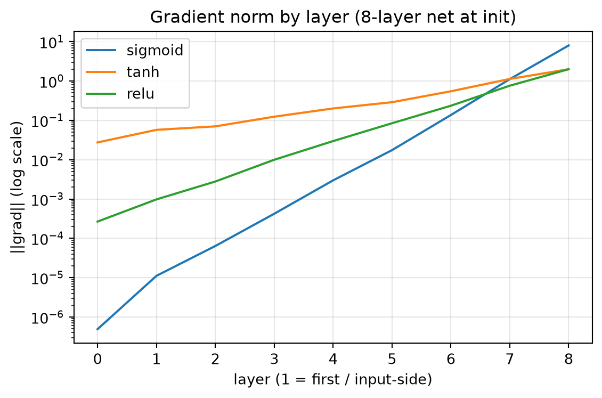

import numpy as np
from dlbook.data import make_spiral
from dlbook.nn.mlp_numpy import MLPNumpy
from dlbook.utils import plot_loss_curves, set_seed
set_seed(42)
Xs, ys = make_spiral(n_per_class=200, seed=0)
Xb, yb = Xs[:64], ys[:64].reshape(-1, 1)9 梯度消失：被忽视十五年的诊断书
1991 年，塞巴斯蒂安·霍克赖特（Sepp Hochreiter）在慕尼黑工大的硕士论文里写下了深度学习史上最重要的诊断之一：反向传播的误差信号在多层网络中会指数性衰减，深层的早期权重几乎学不到东西。这篇德语论文发表后被冷落了大约十年。引用寥寥，无人接续。直到 2001 年前后它才被重新发现，并直接催生了 LSTM。本章我们重做这份诊断，然后体会一个更深的教训：在研究史上，正确的诊断与被听见的诊断之间，可以隔着十五年。
Tip算力需求
A 级：笔记本 CPU · 全部实验合计数秒。
- 算力：训练深度超过四五层的网络仍然奢侈，多数实践停留在两三层。这本身正是梯度消失的后果而非原因：不是没人想加深，是加深了也训不动；
- 数据：序列学习（语音、文本）开始进入视野。序列恰恰是长程依赖的重灾区，梯度消失在那里的杀伤力十倍于前馈网络；
- 认知：社区把”深了训不动”归因于上一章的那些 folklore（局部极小、步长玄学）；“梯度信号本身在传播中衰减”这个解释反而不流行，因为它意味着病在算法的数学结构里，而不是在调参的手艺里；
- 关键事实：Hochreiter 的导师就是 Schmidhuber。这个后来以优先权之争闻名的实验室，在 1991 (Hochreiter 1991) 年拿出的这份诊断，比领域整体准备好接受它早了十年。
9.1 本章问题
1.4 章我们拍过一张快照：sigmoid 深网的第一层梯度比末层小七个数量级。现在把它拍成全景片：梯度范数沿层分布的完整剖面，以及它与激活函数选择的关系。两个问题：
- 梯度消失的数学机制到底是什么？（为什么是指数的？指数底数由什么决定？）
- 为什么这个诊断被听见了也难以根治？（换激活函数能治好吗？）
9.2 历史中的尝试（包括弯路）
弯路一：归因于优化器的手艺。 1990s 主流的解释框架是上一章的 folklore。调好学习率、选好初始化就能解决。这些手段确实缓解了浅层的症状，于是”病已经治了”的错觉流行。直到人们把网络做到八层以上，才发现初始化只救了起点，救不了传播。
弯路二：归因于数据与任务。 “深层只在某些任务上有意义”。这个方向的研究把深度问题误判为应用问题，错过了普适的数学结构。
正解的诞生：Hochreiter (1991) 与随后的 Bengio et al. (1994 (Bengio et al. 1994), Learning long-term dependencies is difficult) 给出了定量诊断。误差信号穿过第 \(l\) 层要乘上该层激活函数的导数与权重矩阵，若各因子的乘积普遍小于 1，梯度就指数衰减；大于 1 则指数爆炸。消失与爆炸是同一枚硬币的两面，而 sigmoid 的导数上界 0.25 让它天然站在”消失”一侧。
诊断之后的十五年：真正被广泛接受的解药要分三路抵达。门控（LSTM 1997，绕开而非治愈）、更好的初始化与激活（2010–2011，缓解）、以及改变梯度通路的架构（残差 2015，治愈）。本章先做诊断，解药在后续章节逐一登场。
缓一缓。让我们把刚才的内容用一句话再说一遍。这一节的核心是：历史中的尝试（包括弯路）。
给你三个候选激活函数：\(\sigma\)（导数上界 0.25）、\(\tanh\)（导数上界 1.0，仅在 0 附近接近 1）、\(\mathrm{relu}\)（导数恒为 1，但是，为 0 的概率约一半）。
任务：不写代码，先在纸上推演。八层网络、随机小权重、输入一批样本，三种激活下”第一层梯度 / 末层梯度”的比值各是多少量级？把你的三个数写下来（10 的幂次即可）。
然后考虑第二问：relu 的导数要么 1 要么 0，期望上不衰减。那它是不是就治好了深层？先别运行，写下你的怀疑（提示：0 导数的那一半路径怎么了？）。
写完再运行下一节的剖面实验对答案。
9.3 核心思想
把反向传播第 \(l\) 层的误差信号展开（对照 1.3 的递推）：
\[\delta_1 = \underbrace{\left(\prod_{l=2}^{L} W_l^\top \odot f'(z_l)\right)}_{\text{逐层连乘}} \delta_L\]
梯度是一长串因子的连乘积。概率论的基本事实：若每个因子的典型幅度是 \(c\)，\(L\) 层连乘后幅度就是 \(c^L\)。
- \(c < 1\)（sigmoid：\(c \le 0.25\)）：指数消失，16 层即 \(10^{-10}\)；
- \(c > 1\)：指数爆炸，同样致命（步长失控）；
- \(c \approx 1\)：唯一能活的区间，且要每一层都落在附近。这就是为什么”深”难：它要求连乘积的所有因子协作。
三种激活的病情：sigmoid 病入膏肓（连 0.25 都不到的常态）；tanh 病情中等（小区间导数接近 1，输入稍大就衰减）；relu 看似健康（活跃区导数恰为 1）。但它的死区（导数为 0）会造成路径稀疏化：连乘里混进零因子，梯度干脆断流。它缓解了幅度问题，没有解决结构问题。
为什么这病难根治：病根不在某个部件，而在”深度 = 连乘”这个结构本身。所有的解药都只能改写连乘的因子（初始化控制 \(W\) 的幅度、激活控制 \(f'\) 的幅度），或者干脆给梯度修一条不经过连乘的高速路（残差连接的恒等路径。3.2 章的主角，此处埋线）。
缓一缓。把刚才的推导或实验消化一下再继续。这一节的核心是：核心思想。
9.4 从零实现
实验一：梯度全景剖面。 八层 × 32 宽的网络，初始化后立刻做一次反向传播，记录每一层的梯度范数：
profiles = {}
for act in ("sigmoid", "tanh", "relu"):
m = MLPNumpy(2, [32] * 8 + [1], activation=act, seed=0)
m.backward(Xb, yb)
profiles[act] = m.grad_norms()
print(f"{act:>8}: " + " ".join(f"{g:.0e}" for g in profiles[act])) sigmoid: 5e-07 1e-05 6e-05 4e-04 3e-03 2e-02 1e-01 1e+00 8e+00
tanh: 3e-02 6e-02 7e-02 1e-01 2e-01 3e-01 5e-01 1e+00 2e+00
relu: 3e-04 1e-03 3e-03 1e-02 3e-02 8e-02 2e-01 8e-01 2e+00plot_loss_curves(
profiles,
title="Gradient norm by layer (8-layer net at init)",
xlabel="layer (1 = first / input-side)",
ylabel="||grad|| (log scale)",
);
读这张剖面图（对照你在「停一停」写下的预测）：
- sigmoid：从第一层 \(5\times10^{-7}\) 到末层 \(8\times10^{0}\)。跨越七个数量级的单调斜坡。第一层的权重收到的学习信号比末层弱一千万倍；在任何合理的学习率下，要么末层正常学、第一层纹丝不动，要么第一层刚动一点、末层已经爆炸。八层 sigmoid 网络实际上是一个”只有末端几层在工作”的浅网络；
- tanh：斜率温和得多（\(10^{-2}\) 到 \(10^{0}\)），但是，同样左低右高。tanh 能撑得更深，撑不到很深；
- relu：整体健康，但是，第一层仍然比末层小三个数量级左右。幅度问题缓解了，没有消失（死区造成的路径稀疏 + 缩放初始化在 relu 下的次优，He 初始化会更合适，见练习 4）。
实验二：剖面预测训练结局。 梯度健康度应该在训练成绩上兑现。relu 剖面最健康。那八层 relu 在螺旋任务上应该畅通无阻了吧？
from dlbook.train import Trainer, accuracy
m = MLPNumpy(2, [32] * 8 + [1], activation="relu", seed=0)
h = Trainer(m, lr=0.05, momentum=0.9, batch_size=64, seed=0).fit(Xs, ys, 1200)
print(f"relu 8 层，1200 epoch 后: loss={h['loss'][-1]:.4f}, acc={accuracy(m, Xs, ys):.2f}")relu 8 层，1200 epoch 后: loss=1.0067, acc=0.50loss 在 1.0 附近纹丝不动，准确率 0.50。剖面看起来健康的 relu 深网依然没有学会。这就是本章留下的悬念：梯度幅度只是必要条件。深网里还有别的病。训练中每层输入的分布随前面层的更新而漂移（后来被称为内部协变量偏移的直觉）、稀疏路径的协同问题。它们不在”初始化时刻的剖面”里，而在训练的动态过程中。诊断没有结束，手术台已经备好：下一章的工具箱将逐件取出器械，其中一件（BatchNorm）恰好对这个病例有奇效。
缓一缓。回顾一下这一节讲了什么。这一节的核心是：从零实现。
9.5 消融实验
深度的边际恶化。 剖面是静态的，我们让深度动起来。各深度下训练 300 epoch 的成绩：
for depth in (2, 4, 8):
m = MLPNumpy(2, [32] * depth + [1], activation="tanh", seed=0)
h = Trainer(m, lr=0.05, momentum=0.9, batch_size=64, seed=0).fit(Xs, ys, 300)
print(f"tanh depth={depth}: loss={h['loss'][-1]:.4f}, acc={accuracy(m, Xs, ys):.2f}")tanh depth=2: loss=0.9263, acc=0.58
tanh depth=4: loss=0.9181, acc=0.59
tanh depth=8: loss=0.9077, acc=0.65深度每翻一倍，成绩单调恶化。与剖面斜率随深度加陡完全同步。深度是用梯度健康度换来的，这个汇率直到 2015 年才被残差连接改写。
缓一缓。到这里停一停，把刚走过的路理一理。这一节的核心是：消融实验。
9.6 本章 Loss 账本
| 问题 | 回答 |
|---|---|
| 在优化什么 loss？ | 目标函数没有变化。本章发现的是优化信号本身的传输损耗，loss 还没开始降，梯度已经在路上死了一半 |
| 数据从哪来？ | 与上一章相同（螺旋）；梯度消失与数据无关，这正是”病在结构”的证据 |
| 买到了什么能力？ | 定量诊断：层间梯度剖面；以及”深度=连乘”的病根认知 |
| 没买到什么？ | 任何解药。本章是纯诊断章；三路解药（门控/激活与初始化/架构）在后续章节分头抵达 |
- “指数连乘”结构 → Transformer 的注意力在长序列上的衰减问题（4.x 的 RNN、8.x 的长上下文）是同一病的新马甲；
- 梯度剖面诊断法 → 今天训练大模型时的梯度监控（per-layer grad norm 是标准 dashboard 指标）；LLM 训练的”loss spike”排查用的还是这套解剖逻辑；
- relu 的”缓解但未治愈” → 残差连接修的”不经过连乘的高速路”（3.2）→ Transformer 的 skip connection（5.2）→ 今天百层深栈的标配；
- 被埋没的诊断 → Hochreiter 的遭遇将在后续历史中反复上演（值得思考：什么样的制度/文化能让正确的诊断更快被听见？）。
Bengio, Y., Simard, P. & Frasconi, P. (1994). Learning long-term dependencies is difficult. IEEE Transactions on Neural Networks 5(2), 157–166.
- 读什么：第 II 节的梯度衰减分析。把”深了训不动”从 folklore 提升为定理级诊断的原文；
- 跳过什么：实验细节；
- 历史注：Hochreiter 1991 的硕士论文（德语）更早更完整，但是，语言的墙加厚了被听见的墙。对比 1986 年反向传播靠 Nature + PDP 两卷本点燃。传播渠道与内容同等重要，这个规律在今天的 arXiv 时代依然成立（且被乐观者认为已改善，被悲观者认为只是换了个形式）。
9.7 遗留问题
- relu 深网为何仍然卡死？训练动态中的”漂移”病如何治？（→ 下一章 BatchNorm）；
- 能不能给梯度修一条绕开连乘的路？（→ 3.2 残差连接）；
- 序列上的长程依赖是梯度消失的十倍重灾区。那里的解药是什么？（→ 4.3 LSTM 的门控）。
缓一缓。让我们把刚才的内容用一句话再说一遍。这一节的核心是：遗留问题。
9.8 参考文献
- Hochreiter, Sepp (1991). Untersuchungen zu dynamischen neuronalen Netzen. Diploma Thesis (in German), Technische Universit"a. ↗ 搜索原文
- Bengio, Yoshua and Simard, Patrice and Frasconi, Paolo (1994). Learning Long-Term Dependencies with Gradient Descent is Difficult. IEEE Transactions on Neural Networks, 5, 157–166. doi:10.1109/72.279181
- Glorot, Xavier and Bengio, Yoshua (2010). Understanding the Difficulty of Training Deep Feedforward Neural Networks. Proceedings of AISTATS, 9, 249–256. ↗ 搜索原文
- Hornik, Kurt and Stinchcombe, Maxwell and White, Halbert (1989). Multilayer Feedforward Networks Are Universal Approximators. Neural Networks, 2, 359–366. doi:10.1016/0893-6080(89)90020-8
9.9 练习
- 造轮子：写一个函数
layerwise_ratio(model, X, y)返回”首层梯度范数/末层梯度范数”，对 sigmoid/tanh/relu 各跑 5 个种子取中位数，把 2.2a 的单种子结论变成稳健结论。 - 预测再运行：把网络宽度从 32 改成 128，梯度剖面会怎么变？（先猜斜率变陡还是变缓。注意缩放初始化下宽度对 \(W\) 范数的影响。）
- 消融：给 sigmoid 网络配上 2.1 的缩放初始化，剖面斜率会改善多少？距离”健康”还差几个数量级？
- 进阶：推导 He 初始化（\(\mathrm{Var}(w)=2/\text{fan-in}\)）为什么是 relu 的正确搭配（提示：一半路径死亡，活跃路径需要两倍方差补偿）。
- 论文映射：用四问账本拆 Bengio et al. 1994。注意它第四问（没买到什么）的答案是”任何解药”，这类纯诊断论文在研究生态里的价值如何定价？
Note练习答案
练习 2：缩放初始化下单层 \(W\) 的谱范数随宽度缓慢变化，剖面斜率主要被激活函数的导数分布决定。宽度影响远小于深度。若你预测”宽度加剧消失”，修正来自 relu：更宽的层死区比例更稳定（大数定律），反而略健康。
练习 3：改善约一个数量级（sigmoid 的 0.25 上界仍在），距 tanh 的剖面还有两个数量级。初始化治不了激活函数本身的病，两味药要分开开。
练习 4 提示：relu 活跃输出方差为输入方差的一半（负半轴归零），要守恒需要 \(\mathrm{Var}(w) = 2/\text{fan-in}\)。
Bengio, Yoshua, Patrice Simard, and Paolo Frasconi. 1994. “Learning Long-Term Dependencies with Gradient Descent Is Difficult.” IEEE Transactions on Neural Networks 5 (2): 157–66. https://doi.org/10.1109/72.279181.
Brown, Tom B., Benjamin Mann, Nick Ryder, et al. 2020. “Language Models Are Few-Shot Learners.” NeurIPS.
Devlin, Jacob, Ming-Wei Chang, Kenton Lee, and Kristina Toutanova. 2019. “BERT: Pre-Training of Deep Bidirectional Transformers for Language Understanding.” NAACL.
He, Kaiming, Xiangyu Zhang, Shaoqing Ren, and Jian Sun. 2015. “Deep Residual Learning for Image Recognition.” arXiv Preprint arXiv:1512.03385.
Hochreiter, Sepp. 1991. “Untersuchungen Zu Dynamischen Neuronalen Netzen.” Diploma Thesis (in German), Technische Universität München.
Hoffmann, Jordan, Sebastian Borgeaud, Arthur Mensch, et al. 2022. “Training Compute-Optimal Large Language Models.” arXiv Preprint arXiv:2203.15556.
Kaplan, Jared, Sam McCandlish, Tom Henighan, et al. 2020. “Scaling Laws for Neural Language Models.” arXiv Preprint arXiv:2001.08361.
Krizhevsky, Alex, Ilya Sutskever, and Geoffrey E. Hinton. 2012. “ImageNet Classification with Deep Convolutional Neural Networks.” NeurIPS.
Rafailov, Rafael, Archit Sharma, Eric Mitchell, Christopher D. Manning, Stefano Ermon, and Chelsea Finn. 2023. “Direct Preference Optimization: Your Language Model Is Secretly a Reward Model.” NeurIPS.